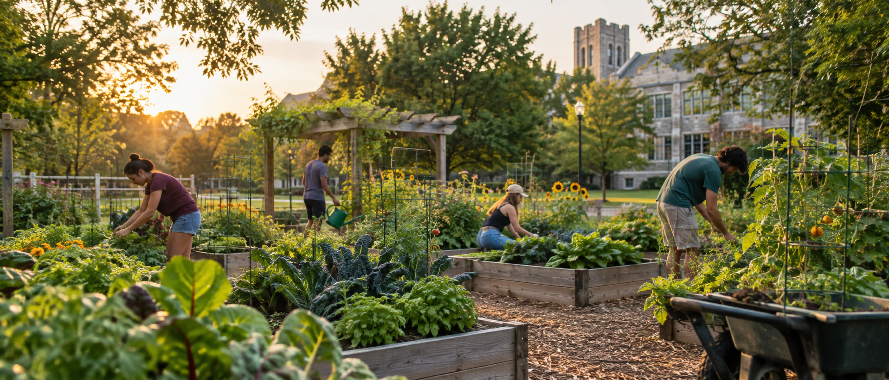
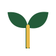
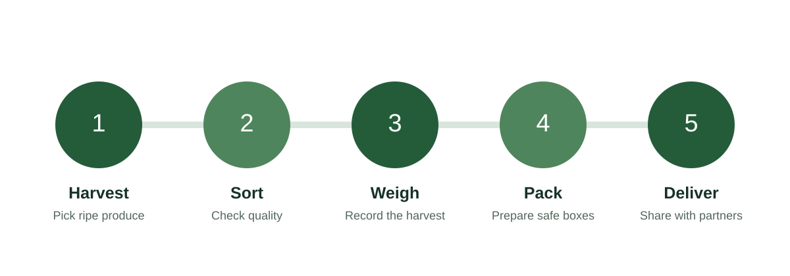

Saturday Workday
Plant, weed, water, and learn alongside experienced garden volunteers.

Grow together
Students, faculty, and neighbors grow fresh produce for local families while learning practical gardening skills.
Find a volunteer day
Why the garden matters
Every harvest supports community partners. Every workday gives volunteers a chance to learn, serve, and build relationships.
Upcoming opportunities
Plant, weed, water, and learn alongside experienced garden volunteers.

Gather ripe produce and prepare it for delivery to our community partners.
From garden to table
Our weekly process keeps fresh produce moving efficiently from the garden to community tables.
